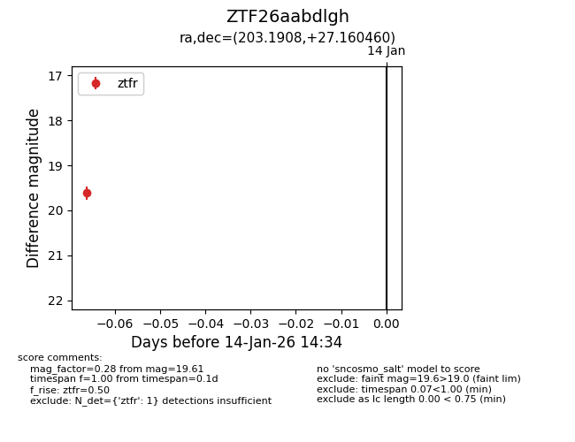
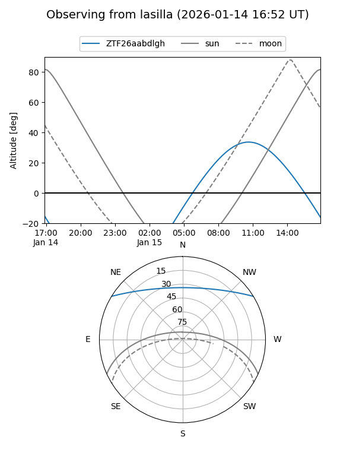
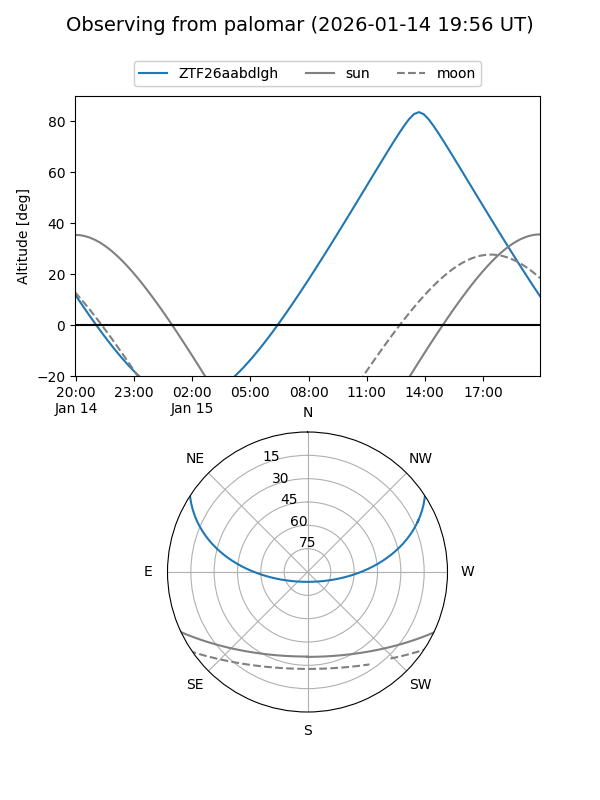

ZTF26aabdlgh
Target ZTF26aabdlgh at 2026-01-14 14:35
Aliases and brokers:
FINK: link
Lasair: link
ALeRCE: link
alt names
ZTF26aabdlgh (ztf,fink_ztf)
Coordinates:
equatorial (ra, dec) = 203.1908,+27.16046
equatorial (HMS+DMS) = 13:32:45.80,+27:09:37.66
galactic (l, b) = (35.4939,+80.80909)
Flags:
Photometry:
last ztfr=19.61
1 ztfr detections
Lightcurve

Visibility


Additional plots